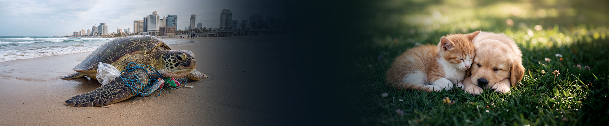

אותה רשת שמירה — הפעם ליער, לחוף, לחי ולסביבה.
חיה פצועה, שריפה מתחילה, מפגע בשמורה — מישהו קרוב תמיד רואה ראשון.
צילום, סוג המפגע, והמיקום נלכד אוטומטית. עשר שניות.
המתנדבים והגורמים באזור מקבלים את הדיווח מיד.
רואים מי בדרך ומה קרה בסוף.
חיה פצועה או לכודה — המתנדב הקרוב שיודע לטפל מקבל התרעה עם מיקום מדויק.
שריפת חורש מתחילה קטנה. דקות קובעות. דיווח מוקדם מגיע מיד לכל מי שבטווח.
זיהום, דגה פגועה, זרם מסוכן, מדוזות — מפה חיה מאנשים שנמצאים שם עכשיו.
פסולת, פגיעה בצמחייה, רכב במקום אסור — תיעוד עם מיקום.
לפני שיוצאים לטיול — מה מסוכן היום באזור. לא ארכיון.
אותם מעגלי אמון — הפעם עבור הטבע.
נעדכן אותך ברגע ש-SH✡MER Nature עולה לאוויר.
SH✡MER Nature אינו תחליף לשירותי חירום. במצב חירום חייג/י 100 · 101 · 102.